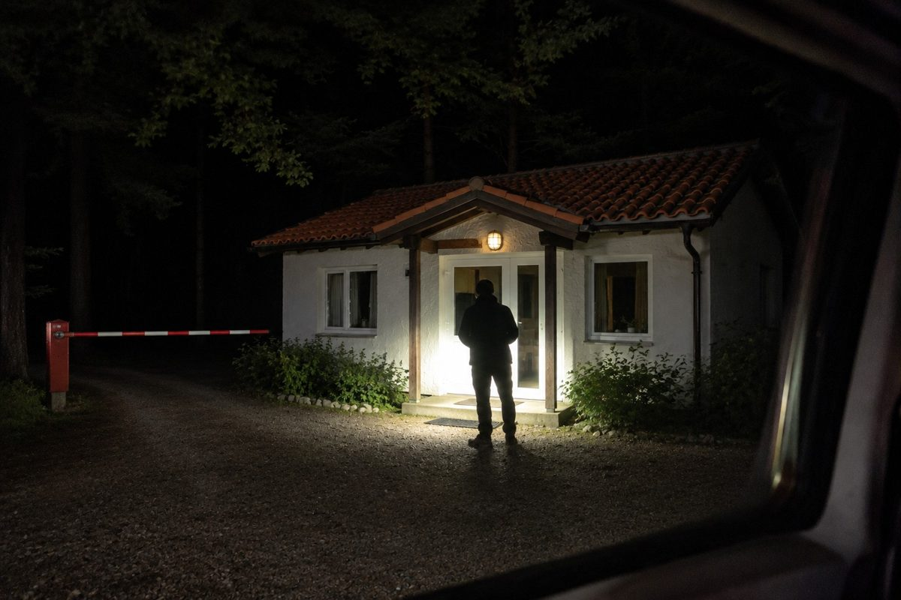
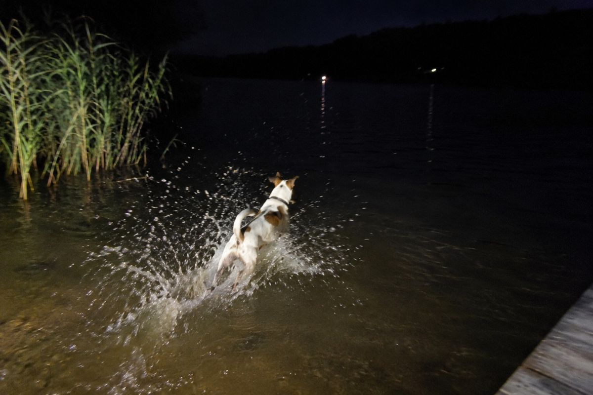
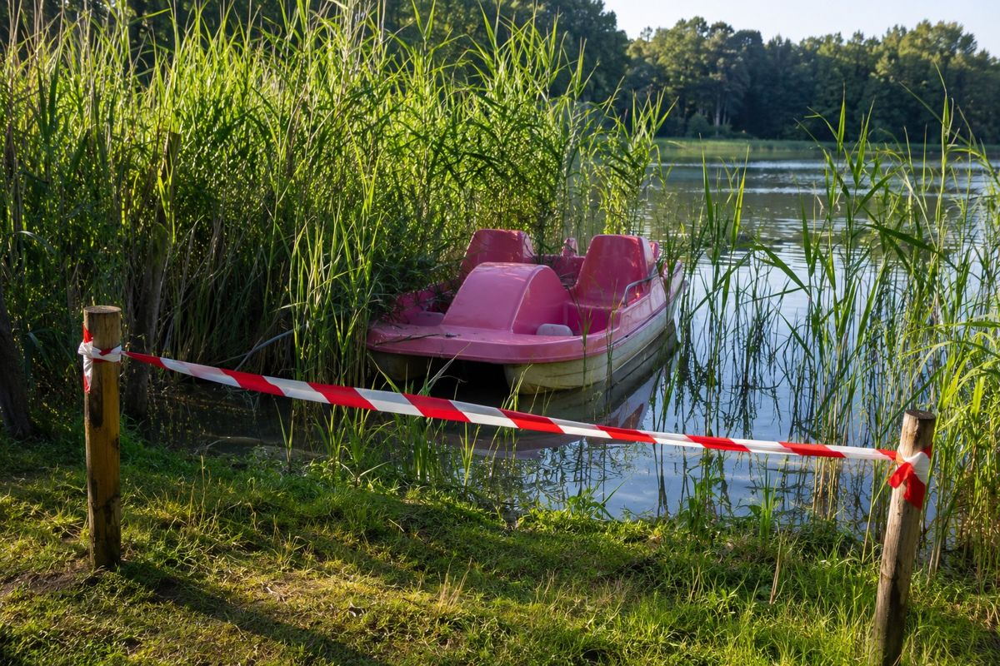
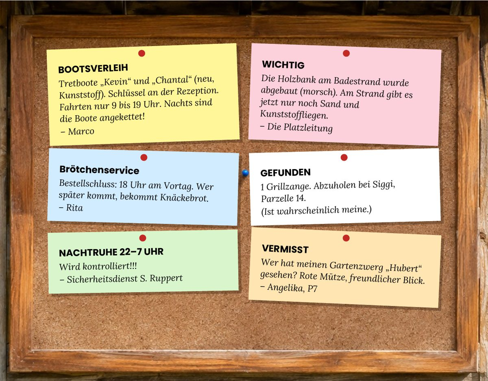
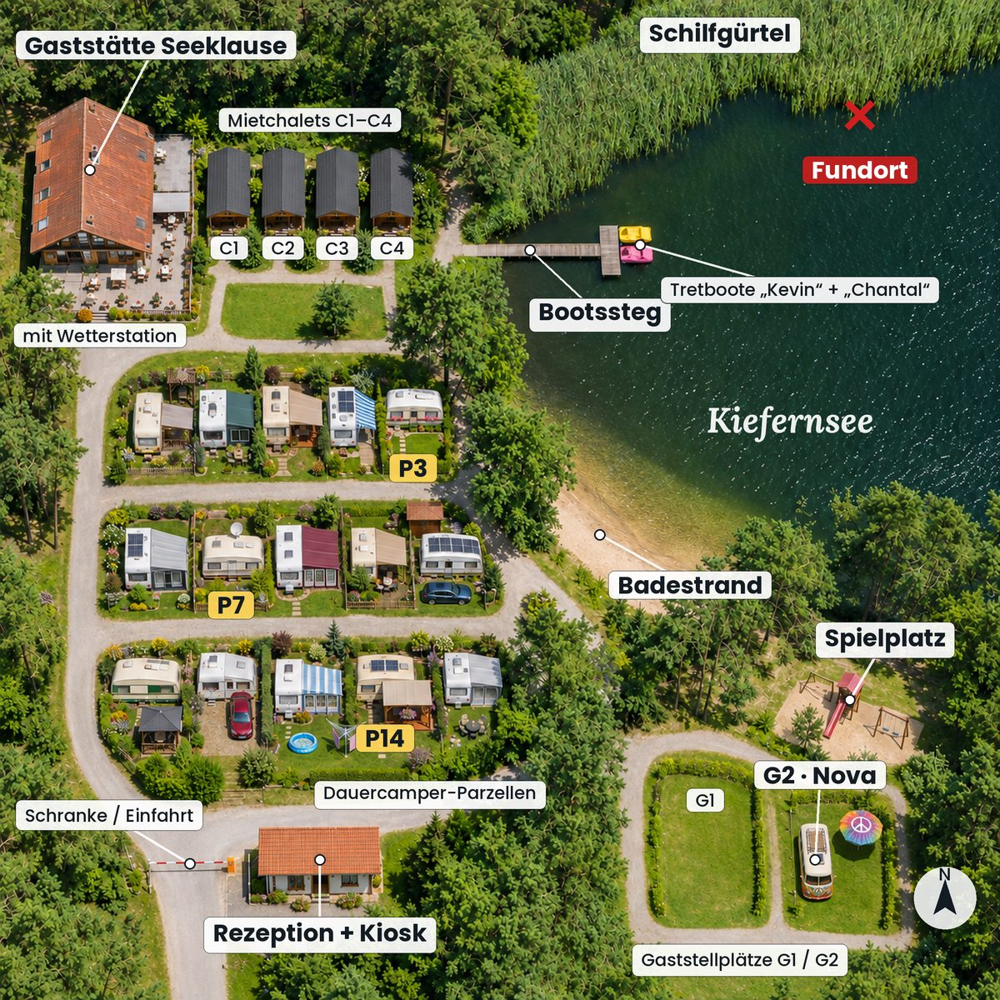
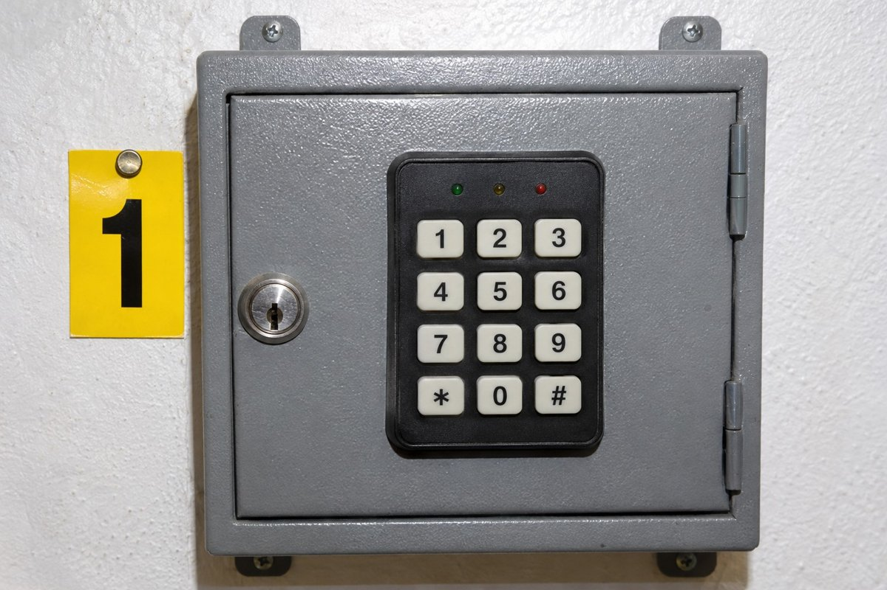
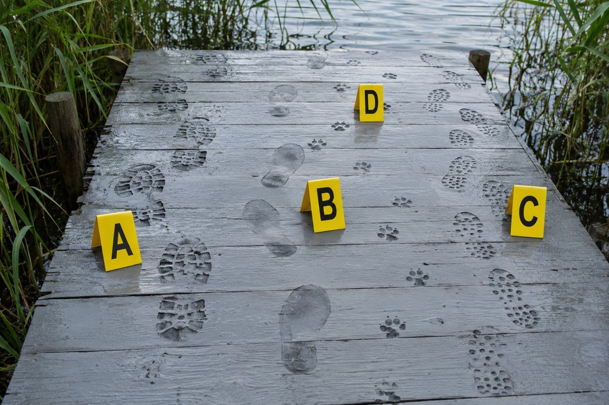
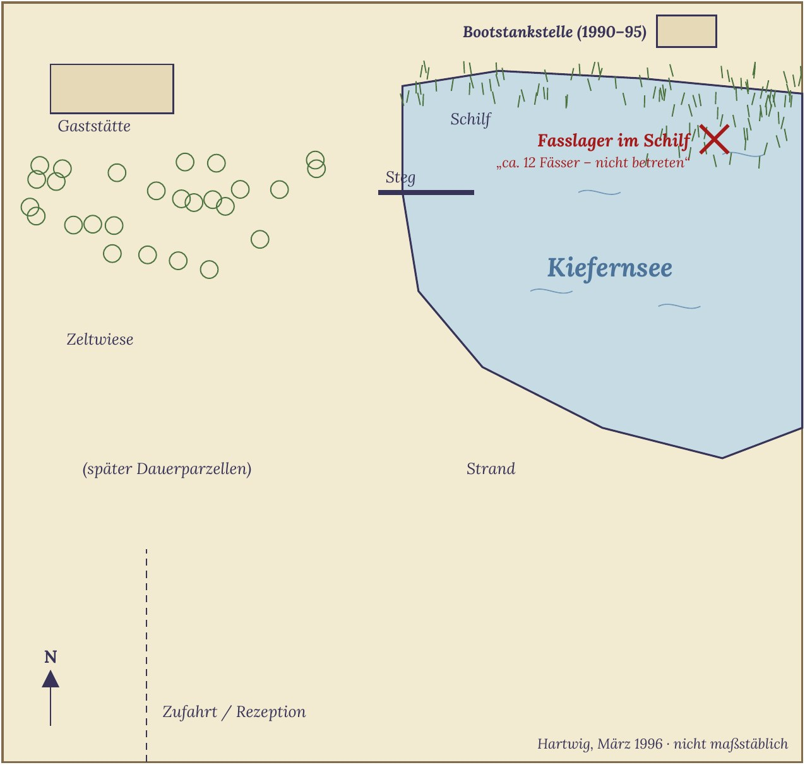

nova.on.wheels · 23:12🌙

nova.on.wheels · 01:28🐶

Das Kennwort steht im Brief von Hauptkommissarin Wendland, ganz unten.
Jeder wählt auf seinem eigenen Handy seine Farbe. Ihr seht dann nur eure eigene Akte – und die gemeinsamen Seiten.
Die Dienstnummer steht auf eurem Ausweis und hinten im Buch eures letzten Falls.
Das Buch bleibt eure Hauptakte. Dort stehen alle Spuren, der Notizbogen und die Auflösung. Legt es beim Spielen immer mit auf den Tisch. Euren geheimen Verdacht und die Punkte führt ihr hier in der Web-App.
Akte Rot ist die Spielleitung: Am Ende jedes Akts übergibt Akte Blau den versiegelten Verdacht und die Punkte per QR-Code an Akte Rot.
📖 Notizbogen und Auflösung findet ihr im Buch.
31 Js 0926/BR
Samstag, 26.09., 06:44 Uhr, Notruf über Leitstelle (Anruferin: Rita Schäfer)
Campingplatz am Kiefernsee, Nordostufer, Schilfgürtel. Wassertiefe ca. 60 cm.
Holger Brandner, 58 J., wohnhaft Frankfurt am Main. Gast in Mietchalet 3.
Leiche in Bauchlage im Flachwasser, unmittelbar neben dem treibenden Tretboot „Chantal“. Bekleidung: Jeans, Hemd, Sakko, Lederslipper.
Platzwunde am Hinterkopf, ca. 4 cm. Keine Abwehrverletzungen.
Dr. A. Okonkwo: Tod durch Ertrinken. Die Kopfverletzung entstand vor dem Eintritt ins Wasser, das Opfer war vermutlich bewusstlos. In der Wunde: mehrere kleine Holzsplitter, Nadelholz, vermutlich Lärche, mit grauer Lasur.
Todeszeitpunkt nach Körpertemperatur: zwischen 22:00 und 2:00 Uhr. Wegen der Wassertemperatur nicht enger bestimmbar.
Kunststoff (PE), Baujahr 2025. Keine Beschädigungen, keine Blut- oder Haaranhaftungen. Die Sicherungskette hängt nicht am Boot.
EKHK'in J. Wendland, KK Brüggemann

Vermerk: Bargeld und Kreditkarten vollständig vorhanden. Ein Raubmord erscheint daher unwahrscheinlich. Mietchalet 3 war nicht abgeschlossen, keine Einbruchsspuren.
SICHERHEITSDIENST RUPPERT · Objekt: Camping Kiefernsee · Datum: 25./26.09.
S. Ruppert
F: Frau Schäfer, Sie haben Herrn Brandner gefunden. Erzählen Sie bitte.
A: Um 6:42. Ich fahr jeden Morgen die Brötchen aus, mit dem Lastenrad am Ufer lang. Da seh ich die Chantal im Schilf hängen. Und daneben im Wasser … den Herrn Brandner. Ich hab sofort die 110 angerufen.
F: Ist Ihnen in der Nacht etwas aufgefallen?
A: Ich wohn ja auf Parzelle 3, gleich oberhalb vom Steg. So gegen halb zwei hat's da unten richtig laut PLATSCH gemacht. Ich hab noch gedacht: Jetzt ist einer reingefallen.
F: Sind Sie nachsehen gegangen?
A: Ich hatte schon die Lockenwickler drin. Da geh ich nicht mehr raus.
F: Und vorher, so gegen Mitternacht?
A: Da hab ich geschlafen. Ich schlaf ab zehn. Außer donnerstags, da kommt mein Krimi.
F: Hatte Herr Brandner bei Ihnen Brötchen bestellt?
A: Zwei Laugenbrezeln für Chalet 3. Die liegen jetzt noch in meinem Korb.
Selbst gelesen, genehmigt, unterschrieben:
Rita Schäfer
| Uhrzeit | Temp. °C | Wind aus | km/h |
|---|---|---|---|
| 22:00 | 11,8 | SW | 14 |
| 23:00 | 11,2 | SW | 18 |
| 0:00 | 10,6 | SW | 22 |
| 1:00 | 10,1 | SW | 20 |
| 2:00 | 9,7 | SW | 16 |
| 3:00 | 9,4 | W | 12 |
| 4:00 | 9,0 | W | 9 |
| 5:00 | 8,8 | W | 6 |
| 6:00 | 8,6 | W | 5 |
Niederschlag: 0 mm. Hinweis Wetterdienst: Ein Wind aus Südwest (SW) weht nach Nordosten.
Ihr dürft ihn Akte Blau vorspielen.
LEITSTELLE SEEBRÜCK · Notruf Sa 26.09., 06:44:12 Uhr · Anruferin: Rita Schäfer · Dauer 0:21
Leitstelle: Notruf Leitstelle Seebrück. Wo genau ist der Notfallort?
Anruferin: Hier ist die Rita vom Kiefernsee! Da liegt einer im Wasser, beim Schilf, das ist der Herr Brandner. Der bewegt sich nicht! Das Tretboot ist auch da, die Chantal. Bitte kommen Sie schnell!
Leitstelle: Bleiben Sie, wo Sie sind, und gehen Sie nicht ins Wasser. Rettungswagen und Polizei sind unterwegs.
06:45 Uhr: Rettungswagen und Streife alarmiert.
Gaststätte Seeklause, Freitag, 25.09., 19:00 bis 21:30 Uhr
31 Dauercamper, Platzbetreiber Mark Böttcher, Herr Holger Brandner (Brandner Freizeit & Resort GmbH), Hausmeister Marco Lenz, Sicherheitsdienst Sven Ruppert (am Eingang), Frau Nova Sommer (Gast)
Begrüßung durch Herrn Böttcher. Er möchte „mit 61 nicht mehr jeden Morgen Rasen mähen und Beschwerden lesen“.
Herr Brandner stellt das „Kiefernsee Glamping Resort“ vor: 40 Safarizelte, ein Saunafloß, die Dauerparzellen enden am 31.12.2027. Er holt den Vorvertrag aus seiner roten Ledermappe und sagt: „Hier fehlt nur noch eine Unterschrift.“
Aussprache, sehr lebhaft. Herr Kowalski: „Nur über meinen Grill.“ Frau Sommer fragt, ob es im Resort Steckdosen für Vans gibt. Herr Lenz fragt, ob das Personal übernommen wird. Herr Brandner: „Wir bringen unser eigenes Team mit.“ Herr Lenz verlässt kurz den Raum.
Abstimmung (nicht bindend): 0 dafür, 31 dagegen, 1 Enthaltung (Herr Ruppert, „aus dienstlichen Gründen neutral“).
21:30 Uhr. Herr Brandner verabschiedet sich mit der roten Mappe unter dem Arm: „Ich bin noch bis Sonntag in Chalet 3. Meine Tür steht offen.“
Die Bowle war zu süß.
A. Wohlfahrt
Angelika Wohlfahrt, Schriftführerin
Steg ist frisch lasiert. Lärche, grau. Bis Freitagabend bitte NICHT betreten!! Auch nicht „nur kurz“, Siggi.
Das mit den Fußspuren letztes Jahr war ich nicht.
Doch.
Erinnerung: Heute 19 Uhr Versammlung in der Seeklause. Thema: Herr Brandner und seine „Glamping-Pläne“. Bitte zahlreich erscheinen!
Ich bring meinen Grill mit. Als Argument.
Habt ihr gesehen, wie der seine rote Mappe festhält? Wie ein Baby.
Da ist der Vorvertrag drin. Wenn Mark unterschreibt, sind wir Ende 2027 alle weg.
Leute, ich hab noch nichts unterschrieben. Schlaft drüber. Ich auch.
Erinnerung: Ab 22 Uhr ist Nachtruhe. Parzelle 14, ich hör den Schlager bis zur Schranke.
Das ist Kultur.
Bin nochmal kurz raus, Hubert suchen 🙂 Gute Nacht zusammen!
POLIZEI IST SCHON DA. Am Schilf. Der Herr Brandner. Oh Gott.
Was ist passiert??
Bitte alle auf euren Parzellen bleiben. Die Polizei will mit jedem sprechen.
Das Handy von Holger Brandner war nass, ließ sich aber auslesen. Die letzte Aktivität vor dem Tod ist eine Sprachnachricht an seinen Anwalt. Ihr dürft sie Akte Rot vorspielen.
„Kessler, ich bin's. Die Versammlung war ein Zirkus, aber egal. Ich geh gleich noch runter zum Steg. Da will mir jemand was zeigen. Angeblich was über den Platz, das den Preis ordentlich drückt. Wenn das stimmt, unterschreibt Böttcher am Montag zu unseren Bedingungen. Ruf mich morgen früh an.“
Frau Sommer postet fast jeden Abend eine „Story“ – kurze Fotos, die nach 24 Stunden wieder verschwinden. Wir haben sie vorher gesichert.
Aussage Nova Sommer, Samstag, 8:15 Uhr: „Ich mach jeden Abend ein paar Storys, das ist mein Job. Was drauf ist, sehen Sie ja selbst. Den Herrn Brandner fand ich ehrlich gesagt ganz okay. Er hat mir gesagt, für Vans gibt's im Resort eine Sonderspur.“


Schaut genau hin: Uhrzeit, Ort, Licht, was passiert. Beschreibt es Akte Rot.

Tretboote „Kevin“ und „Chantal“ (neu, Kunststoff). Schlüssel an der Rezeption. Fahrten nur 9 bis 19 Uhr. Nachts sind die Boote angekettet!
– Marco
Die Holzbank am Badestrand wurde abgebaut (morsch). Am Strand gibt es jetzt nur noch Sand und Kunststoffliegen.
– Die Platzleitung
Bestellschluss: 18 Uhr am Vortag. Wer später kommt, bekommt Knäckebrot.
– Rita
1 Grillzange. Abzuholen bei Siggi, Parzelle 14.
(Ist wahrscheinlich meine.)
Wird kontrolliert!!!
– Sicherheitsdienst S. Ruppert
Wer hat meinen Gartenzwerg „Hubert“ gesehen? Rote Mütze, freundlicher Blick.
– Angelika, P7

Rita Schäfer wohnt auf Parzelle 3, gleich oberhalb vom Steg. Nova Sommer steht mit ihrem Van auf G2. Die Wetterstation hängt an der Gaststätte Seeklause.
Das Opfer. Projektentwickler, „Brandner Freizeit & Resort GmbH“. Wollte den Platz kaufen. Wohnte übers Wochenende in Mietchalet 3.
Platzbetreiber. Will verkaufen: „Ich mäh seit 30 Jahren Rasen und lese Beschwerden.“
Dauercamperin seit 1998, Parzelle 7. Sprecherin der Dauercamper und Schriftführerin. Weiß alles über jeden.
Dauercamper, Parzelle 14. Grillmeister, Schlagerfan, Gegner jeder Veränderung.
Hausmeister. Repariert alles, streicht alles, hat Schlüssel für alles.
Sicherheitsdienst. Nimmt die Nachtruhe sehr, sehr ernst.
Gast mit Van auf Stellplatz G2. Vanlife-Influencerin (@nova.on.wheels), reist mit Hund Pepper.
Kiosk und Brötchendienst, Parzelle 3 gleich oberhalb vom Steg. Hat den Toten gefunden.
Jede falsche Antwort kostet euer Team 2 Punkte.
Stufe 1 ist ein kleiner Tipp, Stufe 2 ein großer Tipp, Stufe 3 verrät die Lösung. Jede geöffnete Stufe kostet euer Team einen Punkt. Sprecht euch ab, wer welche Stufe öffnet: Öffnen beide Handys dieselbe Stufe, zählt sie doppelt.
Sonntag, 27.09., 9:10 Uhr, Rezeption. Vernehmung durch EKHK'in Wendland. Personalien: Marco Lenz, 45, Hausmeister, 1,94 m, Schuhgröße 46
F: Herr Lenz, Sie haben am Freitag die Versammlung verlassen. Warum?
A: Ich brauchte eine Zigarette. Der Brandner hat gesagt, er bringt sein eigenes Team mit. Da war für mich klar: Ich bin raus. Nach zehn Minuten war ich wieder drin.
F: Wo waren Sie nach der Versammlung?
A: Zu Hause. Ab zehn lag ich im Bett. Allein. Ich hab nichts gehört und nichts gesehen.
F: Wer kann den Schlüsselkasten in der Rezeption öffnen?
A: Der Chef und ich. Es gibt einen Code. Das Jahr, in dem der Chef den Platz übernommen hat – das kann er sich merken.
F: Und die Bootsschlüssel?
A: Hängen in Fach 3. Beide an einem Ring, Kevin und Chantal. Das Schloss am Steg hab ich Freitagabend um sieben selbst zugemacht, das schwör ich.
F: Sie haben den Steg am Donnerstag gestrichen?
A: Ja. Grau, Lärche. Hab vorne am Stegende angefangen und mich rückwärts zum Ufer gearbeitet. Freitagnacht war der noch nicht ganz trocken.
F: Herr Brandner wollte Sie nicht übernehmen. Das muss Sie wütend gemacht haben.
A: Wütend? Klar. Aber ich bring doch keinen um. Ich hab drei Kinder, Frau Kommissarin.
Ihr dürft die Aufnahme Akte Blau vorspielen.
M. Lenz
F: Herr Böttcher, wo waren Sie in der Nacht von Freitag auf Samstag?
A: Nach der Versammlung bin ich in der Seeklause sitzen geblieben, mit dem Wirt. Ein, zwei Bier. So gegen Viertel vor eins war ich im Bett.
F: Sie wollten den Platz verkaufen. Warum?
A: Ich bin 61. Ich mäh hier seit 30 Jahren Rasen. Irgendwann ist Schluss.
F: Gibt es finanzielle Gründe?
A: Das geht Sie nichts an. … Na gut. Es war knapp. Ist das verboten?
F: Im Archiv Ihrer Rezeption liegt ein Bodengutachten von 1996. Kennen Sie das?
A: Ein Gutachten? Das muss noch mein Vater bestellt haben, kurz bevor ich übernommen hab. Seine Kartons hab ich nie aufgemacht. Ehrlich, davon weiß ich nichts.
F: Wer kennt den Code für den Schlüsselkasten?
A: Marco und ich. Sonst niemand. Glaub ich jedenfalls.
F: Wie erreichen wir Sie, falls wir noch Fragen haben?
A: Hier, meine Karte. Das Handy hat Ihr Kollege ja schon. Auf die Mailbox komm ich trotzdem drauf, wenn ich die Nummer wähle.
Lest Akte Blau die Handynummer vor – damit öffnet sie seine Mailbox (B-8).
Im Flur der Rezeption hängt ein Schlüsselkasten mit Zahlenschloss. Der Flur ist nachts abgeschlossen. Schlüssel dafür haben laut Liste: Platzleitung, Hausmeister und der Vereinsraum der Dauercamper.
Der Kasten speichert jede Öffnung – aber das Protokoll lässt sich nur mit dem richtigen Code auslesen.

Fahrt mit dem Finger die UV-Lampe über das Zahlenfeld. Welche Tasten werden oft gedrückt? Die Reihenfolge verrät euch Herr Lenz (R-6) zusammen mit der Chronik in Akte Blau (B-10).
| Datum | Uhrzeit | Zugang | Aktion |
|---|---|---|---|
| Fr 25.09. | 07:12 | Code Platzleitung/Hausmeister | Fach 1 geöffnet |
| Fr 25.09. | 18:55 | Code Platzleitung/Hausmeister | Fach 3 geöffnet |
| Fr 25.09. | 19:02 | Code Platzleitung/Hausmeister | Fach 3 geöffnet |
| Fr 25.09. | 23:09 | Code Platzleitung/Hausmeister | Fach 3 geöffnet |
| Sa 26.09. | 08:47 | Code Platzleitung/Hausmeister | Fach 3 geöffnet (Polizei, Kontrolle: leer) |
18:55/19:02: Hausmeister Lenz holt den Schlüssel und hängt ihn nach dem Abschließen zurück (bestätigt). 23:09: unbekannt. Es gibt nur einen Code für Platzleitung und Hausmeister.
Gefunden am Samstag, 26.09., im Papierkorb von Mietchalet 3, zerknüllt. Kariertes Papier, oben abgerissen. Am Rand ist noch der Rest eines grünen Aufdrucks zu sehen.
HERR BRANDNER,
HEUTE 23:45 AM STEG.
ICH ZEIGE IHNEN, WAS
IHR GUTACHTER NICHT WEISS.
KOMMEN SIE ALLEIN.
Kriminaltechnik: Blockschrift, vermutlich verstellt. Kugelschreiber, blau. Fingerabdrücke: nur vom Opfer. Der Aufdruck-Rest ist grün und stammt von einem vorgedruckten Briefblock.
Die Taucher der Feuerwehr haben am Samstag den Fundort im Schilf abgesucht. Ihr Bericht ist versiegelt. Ihr öffnet ihn in der Web-App, indem ihr auf dem Luftbild zeigt, wo früher das Fasslager war. Wo das war, weiß Akte Blau.
Tippt im Luftbild auf die Stelle, an der früher das Fasslager war. Norden ist oben.
Samstag, 26.09., 13:00–15:30 Uhr, Feuerwehr Seebrück, Tauchgruppe
Schilfgürtel am Nordostufer, Fundort und Umgebung, Wassertiefe 0,4 bis 1,8 m
Im Schlamm unter dem Schilf: 12 Stahlfässer à 200 Liter, stark verrostet, teils undicht. Ölfilm beim Bewegen. Aufschrift teils lesbar: „Altöl“, „Bootsbenzin“. Liegezeit geschätzt: mehr als 25 Jahre.
Keine. Keine Tasche, keine Mappe, keine Papiere.
Altlast. Die Fässer müssen geborgen und der Boden saniert werden. Untere Wasserbehörde informiert.
Weil die Lasur am Freitagabend noch nicht ganz trocken war (R-6), sind auf dem Steg Abdrücke geblieben. Die Spurensicherung hat sie am Samstagmorgen gesichert.

Samstag, 26.09., 16:20 Uhr, Parzelle 14. Befragung durch KK Brüggemann
F: Herr Kowalski, wann haben Sie Freitagnacht die Musik ausgemacht?
A: Kurz vor zwölf. Wegen dem Sicherheitsmenschen. Ich hab dann noch kurz vor der Tür eine geraucht.
F: Ist Ihnen dabei etwas aufgefallen?
A: Da ist einer runter Richtung Steg. Mit Taschenlampe. Klein war der. Und es hat geklappert, so wie Holzschuhe auf dem Weg. Ich dachte, einer muss noch aufs Klo.
F: Erkannt haben Sie die Person nicht?
A: Nee. Brille lag drinnen. Ich seh ja ohne nix.
Gefunden am Samstag im Archiv der Rezeption, Karton „Vater, 1990–1999“, mit Klebeband verschlossen, dick verstaubt.
INGENIEURBÜRO HARTWIG · SEEBRÜCK
Bodengutachten Campingplatz am Kiefernsee
Werner Böttcher (Eigentümer)
Ingenieurbüro Hartwig, Seebrück, 16. März 1996
Schließung der Bootstankstelle am Nordostufer (Betrieb 1990–1995)
Laut Aussage des früheren Tankwarts, Herrn Herbert Wohlfahrt, wurden 1994/95 etwa 12 Fässer mit Altöl und Bootsbenzin „entsorgt“, indem sie im Schilf vor der Tankstelle versenkt wurden. Lage: siehe Anlage 3 (Karte).
Bergung der Fässer und Bodensanierung. Geschätzte Kosten: 380.000 DM.
„Erst mal nicht. Zu teuer. – W. B.“
Randnotiz in Bleistift (unten rechts).
Anlage 3 zum Gutachten: Lageplan von 1996, von Hand gezeichnet. Damals sah der Platz noch anders aus – die Tankstelle wurde 2001 abgerissen. Beschreibt Akte Rot genau, wo das Fasslager lag. Akte Rot zeigt die Stelle in der Web-App auf dem heutigen Luftbild (R-10).

Das Handy von Mark Böttcher hat die Polizei sichergestellt. Seine Mailbox lässt sich aber anrufen. Die Nummer steht auf seiner Visitenkarte – die hat Akte Rot. Wählt die Nummer in der Web-App.
Guten Tag, Herr Böttcher, hier ist Frau Engel von der Sparkasse Seebrück. Es geht noch einmal um Ihren Kredit. Wir können die Frist nur bis zum dreißigsten September verlängern. Wenn bis dahin kein Kaufvertrag unterschrieben ist, müssen wir leider die Zwangsversteigerung einleiten. Bitte rufen Sie mich zurück. Danke.
Ihr dürft die Nachricht Akte Rot vorspielen.
Frau Sommer hat uns am Samstagabend freiwillig ihre Direktnachrichten gezeigt. „Ich hab nichts zu verbergen“, sagt sie. „Er schon.“
Du warst heute die Einzige, die gelacht hat.
21:40Dein Gesicht bei „eigenes Team“ 😂 Tut mir echt leid für dich.
21:42Noch wach?
22:41Pepper schläft schon. Ich nicht.
22:43Bin um 11 da. Hintertür.
22:44🙈 ok
22:44Bin da 🔧
23:02Bitte sag niemandem, dass ich da war. Wenn der Chef das erfährt, bin ich sofort raus.
07:15Versprochen.
07:16Aus dem Ordner der Schriftführerin, abgegeben am Samstag. Briefbogen der Interessengemeinschaft (grüner Kopf).
M. Böttcher, M. Lenz
M. Böttcher, M. Lenz, A. Wohlfahrt (für die IG)
nur Platzleitung und Hausmeister
A. Wohlfahrt
Schriftführerin
Vollständiger Export vom Handy von Angelika Wohlfahrt, Freitagnacht bis Samstagmittag. Die Lücken im ersten Auszug (B-2) sind jetzt gefüllt.
Erinnerung: Ab 22 Uhr ist Nachtruhe. Parzelle 14, ich hör den Schlager bis zur Schranke.
Das ist Kultur.
Bin nochmal kurz raus, Hubert suchen 🙂 Gute Nacht zusammen!
🚫 Diese Nachricht wurde gelöscht.
?
POLIZEI IST SCHON DA. Am Schilf. Der Herr Brandner. Oh Gott.
Was ist passiert??
Bitte alle auf euren Parzellen bleiben. Die Polizei will mit jedem sprechen.
Ich sag ja nichts. Aber Marco war gestern schon so komisch. Und nachts ist der doch immer unterwegs.
Lass mal die Polizei machen, Angelika.
Gute Nachricht wenigstens: Hubert ist wieder da!! Stand heute früh einfach in meinem Beet 😊
Na Gott sei Dank.
Diese Akte gehört zu Akt 2. Sie öffnet sich auf diesem Handy, sobald ihr Akt 1 gelöst und euren Verdacht unter „Akt 1 abschließen“ versiegelt habt.
Jede falsche Antwort kostet euer Team 2 Punkte.
Stufe 1 ist ein kleiner Tipp, Stufe 2 ein großer Tipp, Stufe 3 verrät die Lösung. Jede geöffnete Stufe kostet euer Team einen Punkt. Öffnen beide Handys dieselbe Stufe, zählt sie doppelt.
Wer steckt eurer Meinung nach hinter allem? Jeder wählt geheim auf seinem eigenen Handy einen Hauptverdacht. Zeigt dem anderen nicht euren Bildschirm.
Akte Rot ist die Spielleitung. Akte Rot öffnet in der eigenen Web-App „Akt abschließen“ und tippt auf „QR-Code scannen“. Der Code verrät euren Verdacht nicht.
Akte Blau zeigt nach dem Versiegeln einen QR-Code. Scannt ihn am besten hier in der Web-App.
Scannen klappt hier nicht? Dann scannt den Code einfach mit der normalen Kamera-App eures Handys – genau wie die QR-Codes im Buch. Der Spielstand wird trotzdem übernommen.
Löscht auf diesem Handy alle Punkte, versiegelten Verdachte und die gewählte Akte. Kennwort, Dienstgrad und Ausweis bleiben gespeichert.
Spielt ihr zu zweit von vorn, macht das bitte auf beiden Handys.
Mit jedem gelösten Fall der Reihe sammelt ihr Sterne und werdet befördert. Die Beförderungen gibt es am Ende des Falls – nach Akt 3.